Grade 8 — Pre-algebra and functions
Linear models, roots and geometry. This guide contains 57 chapter-level worked lessons, review questions, answers, and linked illustrations.
Contents — select a chapter
Slope
Slope is vertical change divided by horizontal change: m = (y2−y1)/(x2−x1).
Through (1,2) and (3,8), m=3.
- Rise 8−2=6
- Run 3−1=2
- 6/2=3.
Slope from (2,1) to (5,10)?
Hint: Rise nine, run three.
Show answer and verify
3
Check the units, inputs and intermediate steps. Different solution methods may be valid.
Slope-intercept form
y=mx+b represents slope m and y-intercept b.
y=2x+3 at x=4 gives y=11.
- Multiply 2×4
- Add 3.
Find y when y=−3x+8 and x=2.
Hint: Substitute x=2.
Show answer and verify
2
Check the units, inputs and intermediate steps. Different solution methods may be valid.
Solve linear equations
Combine like terms and isolate unknown.
5x−7=2x+8: x=5.
- Subtract 2x
- Add 7
- 3x=15
- Divide by three.
Solve 6x+4=2x+24.
Hint: Group x terms on one side.
Show answer and verify
5
Check the units, inputs and intermediate steps. Different solution methods may be valid.
Systems of equations
Find an ordered pair satisfying both equations.
x+y=7, x−y=1 gives x=4,y=3.
- Add equations
- 2x=8
- Substitute x=4
- y=3.
If x+y=9 and x−y=3, what is x?
Hint: Add the two equations.
Show answer and verify
6
Check the units, inputs and intermediate steps. Different solution methods may be valid.
Pythagorean theorem
Right triangles satisfy a²+b²=c², where c is hypotenuse.
3²+4²=25, so c=5.
- Square legs
- Add
- Square root.
Legs 5 and 12. Find hypotenuse.
Hint: Use sqrt(25+144).
Show answer and verify
13
Check the units, inputs and intermediate steps. Different solution methods may be valid.
Square roots and radicals
The principal square root is nonnegative; √a × √a = a for a≥0.
√81 = 9.
- 9²=81
- Principal root is +9.
sqrt(144)
Hint: Find the positive number whose square is 144.
Show answer and verify
12
Check the units, inputs and intermediate steps. Different solution methods may be valid.
Scientific notation
Write values as a×10^n where 1≤|a|<10.
65000=6.5×10^4.
- Move decimal four places left
- Set exponent 4.
3.2 * 10^5
Hint: Move decimal five right.
Show answer and verify
320000
Check the units, inputs and intermediate steps. Different solution methods may be valid.
Function notation
f(x) is an output determined by input x.
If f(x)=x²+1, then f(3)=10.
- Substitute x=3
- Square and add one.
If f(x)=2x²−1, find f(4).
Hint: 2×16−1.
Show answer and verify
31
Check the units, inputs and intermediate steps. Different solution methods may be valid.
Transformations
Translations slide points; reflections flip them across a line.
Move (2,3) right 4 gives (6,3).
- Add 4 to x only
- y stays 3.
Reflect point (−7,4) over y-axis. What is new x?
Hint: The y-axis reflection flips x sign.
Show answer and verify
7
Check the units, inputs and intermediate steps. Different solution methods may be valid.
Exponent rules
For equal bases, multiply by adding exponents: a^m·a^n=a^(m+n).
2³·2⁴=2⁷=128.
- Combine exponents 3+4
- Evaluate 2^7.
3^2 * 3^3
Hint: Add exponents to get 3^5.
Show answer and verify
243
Check the units, inputs and intermediate steps. Different solution methods may be valid.
Slope from two points
Slope from two points: In y=mx+b, m describes constant slope and b describes initial value. Slope is change in y divided by the corresponding change in x.
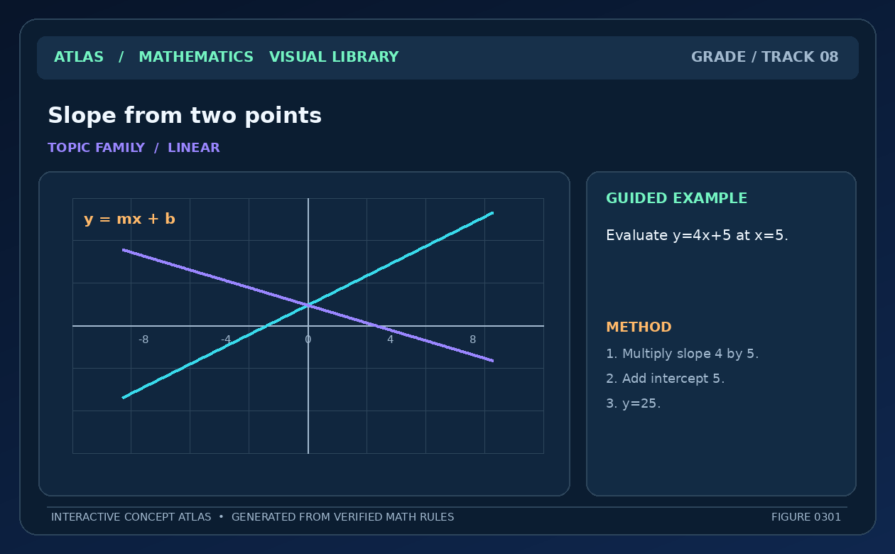
Evaluate y=4x+5 at x=5.
- Multiply slope 4 by 5.
- Add intercept 5.
- y=25.
In y=5x+4, what is y at x=6?
Hint: Substitute x, multiply by slope, then add intercept.
Show answer and verify
34
Check the units, inputs and intermediate steps. Different solution methods may be valid.
Slope-intercept equations
Slope-intercept equations: In y=mx+b, m describes constant slope and b describes initial value. Slope is change in y divided by the corresponding change in x.
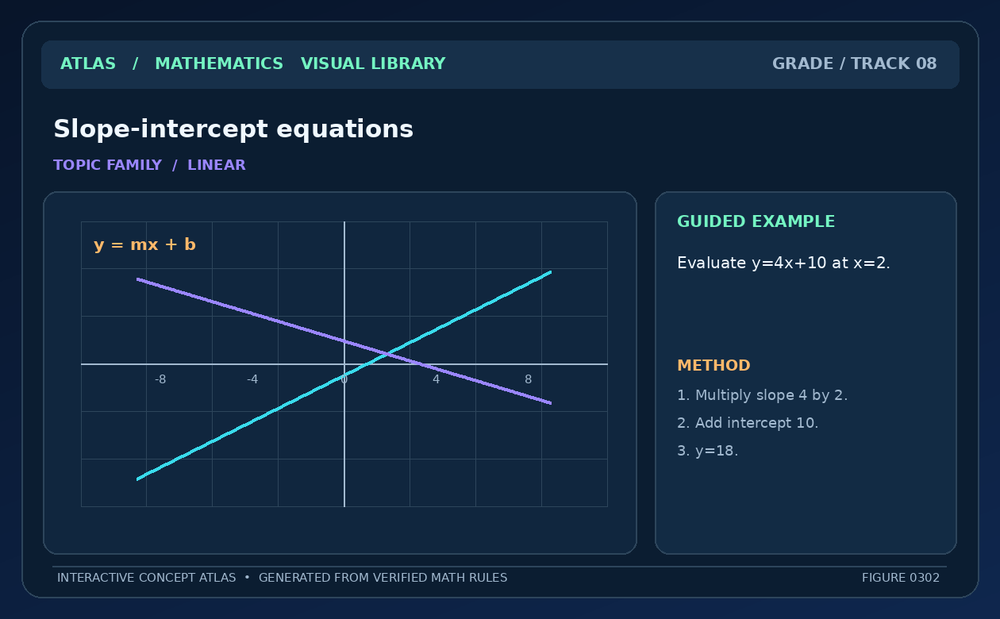
Evaluate y=4x+10 at x=2.
- Multiply slope 4 by 2.
- Add intercept 10.
- y=18.
In y=10x+4, what is y at x=3?
Hint: Substitute x, multiply by slope, then add intercept.
Show answer and verify
34
Check the units, inputs and intermediate steps. Different solution methods may be valid.
Point-slope form
Point-slope form: In y=mx+b, m describes constant slope and b describes initial value. Slope is change in y divided by the corresponding change in x.
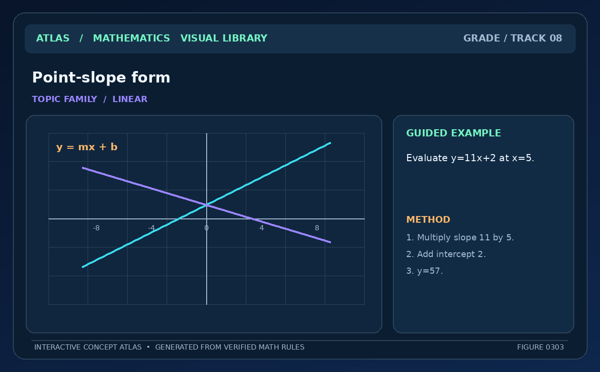
Evaluate y=11x+2 at x=5.
- Multiply slope 11 by 5.
- Add intercept 2.
- y=57.
In y=2x+11, what is y at x=6?
Hint: Substitute x, multiply by slope, then add intercept.
Show answer and verify
23
Check the units, inputs and intermediate steps. Different solution methods may be valid.
Linear functions and mappings
Linear functions and mappings: In y=mx+b, m describes constant slope and b describes initial value. Slope is change in y divided by the corresponding change in x.
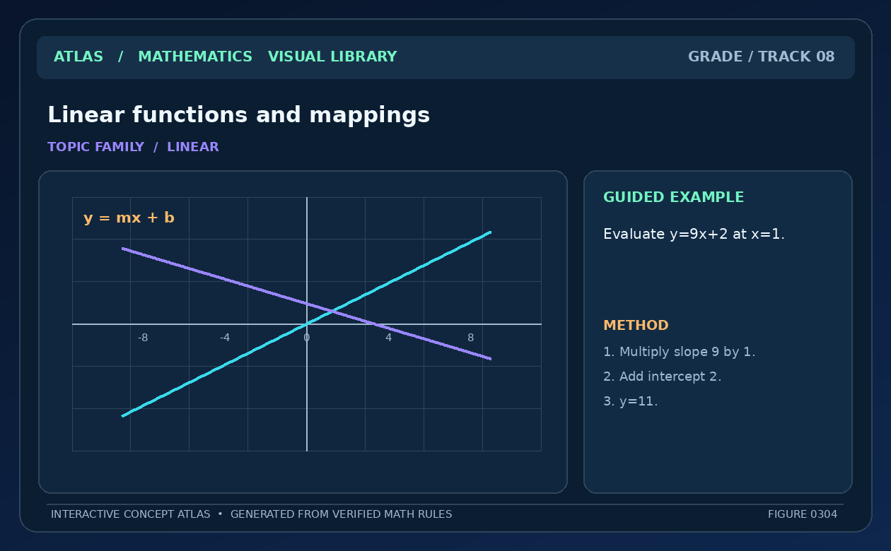
Evaluate y=9x+2 at x=1.
- Multiply slope 9 by 1.
- Add intercept 2.
- y=11.
In y=2x+9, what is y at x=2?
Hint: Substitute x, multiply by slope, then add intercept.
Show answer and verify
13
Check the units, inputs and intermediate steps. Different solution methods may be valid.
Linear inequalities
Linear inequalities: In y=mx+b, m describes constant slope and b describes initial value. Slope is change in y divided by the corresponding change in x.
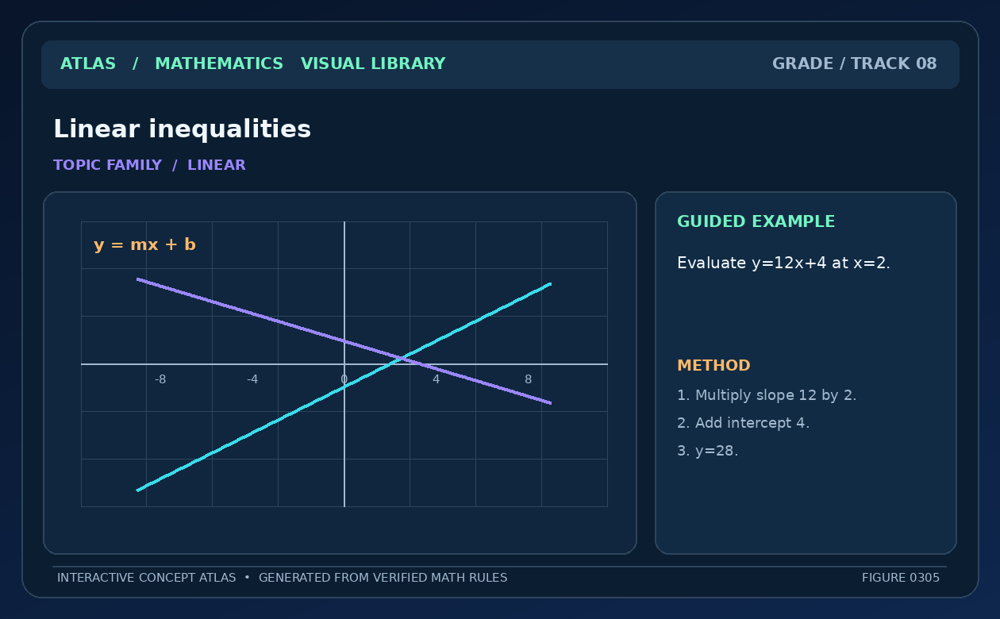
Evaluate y=12x+4 at x=2.
- Multiply slope 12 by 2.
- Add intercept 4.
- y=28.
In y=4x+12, what is y at x=3?
Hint: Substitute x, multiply by slope, then add intercept.
Show answer and verify
24
Check the units, inputs and intermediate steps. Different solution methods may be valid.
Graphing systems of equations
Graphing systems of equations: In y=mx+b, m describes constant slope and b describes initial value. Slope is change in y divided by the corresponding change in x.
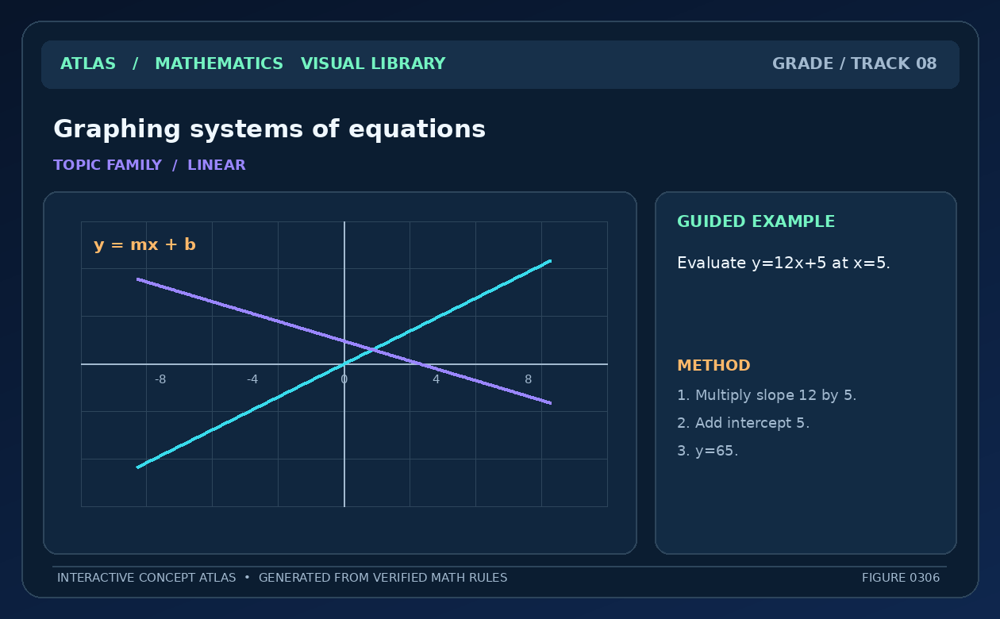
Evaluate y=12x+5 at x=5.
- Multiply slope 12 by 5.
- Add intercept 5.
- y=65.
In y=5x+12, what is y at x=6?
Hint: Substitute x, multiply by slope, then add intercept.
Show answer and verify
42
Check the units, inputs and intermediate steps. Different solution methods may be valid.
Elimination and substitution
Elimination and substitution: In y=mx+b, m describes constant slope and b describes initial value. Slope is change in y divided by the corresponding change in x.
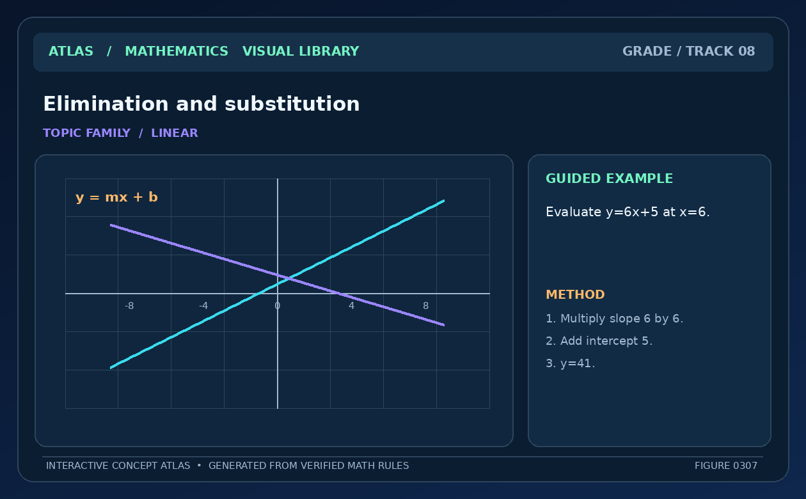
Evaluate y=6x+5 at x=6.
- Multiply slope 6 by 6.
- Add intercept 5.
- y=41.
In y=5x+6, what is y at x=7?
Hint: Substitute x, multiply by slope, then add intercept.
Show answer and verify
41
Check the units, inputs and intermediate steps. Different solution methods may be valid.
Rate of change
Rate of change: In y=mx+b, m describes constant slope and b describes initial value. Slope is change in y divided by the corresponding change in x.
Evaluate y=10x+3 at x=1.
- Multiply slope 10 by 1.
- Add intercept 3.
- y=13.
In y=3x+10, what is y at x=2?
Hint: Substitute x, multiply by slope, then add intercept.
Show answer and verify
16
Check the units, inputs and intermediate steps. Different solution methods may be valid.
Piecewise linear models
Piecewise linear models: In y=mx+b, m describes constant slope and b describes initial value. Slope is change in y divided by the corresponding change in x.
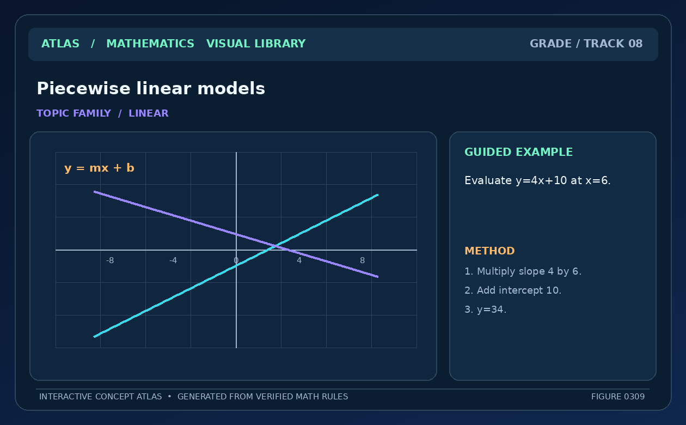
Evaluate y=4x+10 at x=6.
- Multiply slope 4 by 6.
- Add intercept 10.
- y=34.
In y=10x+4, what is y at x=7?
Hint: Substitute x, multiply by slope, then add intercept.
Show answer and verify
74
Check the units, inputs and intermediate steps. Different solution methods may be valid.
Domain and range
Domain and range: In y=mx+b, m describes constant slope and b describes initial value. Slope is change in y divided by the corresponding change in x.
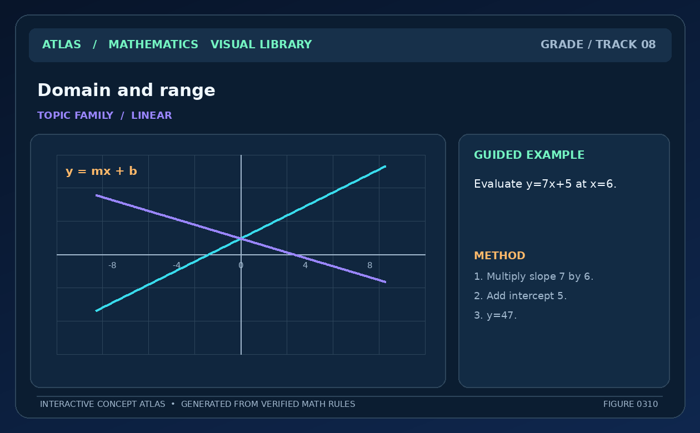
Evaluate y=7x+5 at x=6.
- Multiply slope 7 by 6.
- Add intercept 5.
- y=47.
In y=5x+7, what is y at x=7?
Hint: Substitute x, multiply by slope, then add intercept.
Show answer and verify
42
Check the units, inputs and intermediate steps. Different solution methods may be valid.
Distributive equations
Distributive equations: Undo operations in reverse order and perform the same operation on both sides. An equation represents equality, so balanced transformations preserve its solution.
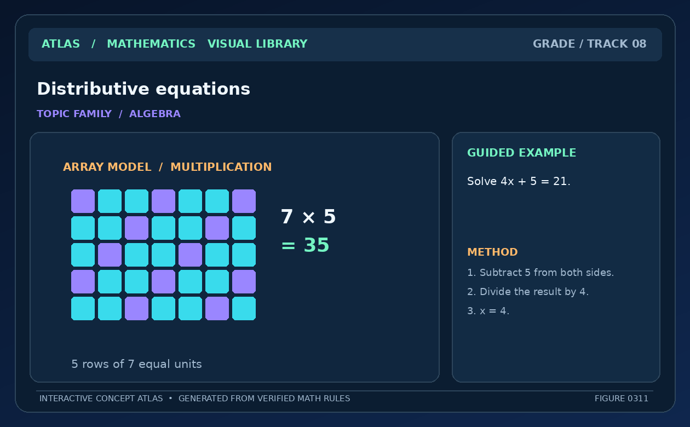
Solve 4x + 5 = 21.
- Subtract 5 from both sides.
- Divide the result by 4.
- x = 4.
Solve 5x + 4 = 34. Enter x.
Hint: Undo addition and then multiplication.
Show answer and verify
6
Check the units, inputs and intermediate steps. Different solution methods may be valid.
Equations with fractions
Equations with fractions: Undo operations in reverse order and perform the same operation on both sides. An equation represents equality, so balanced transformations preserve its solution.
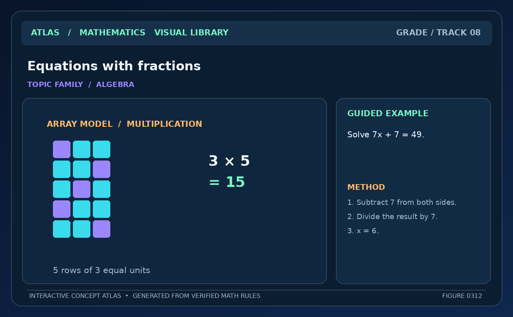
Solve 7x + 7 = 49.
- Subtract 7 from both sides.
- Divide the result by 7.
- x = 6.
Solve 7x + 7 = 63. Enter x.
Hint: Undo addition and then multiplication.
Show answer and verify
8
Check the units, inputs and intermediate steps. Different solution methods may be valid.
Multistep inequalities
Multistep inequalities: Undo operations in reverse order and perform the same operation on both sides. An equation represents equality, so balanced transformations preserve its solution.
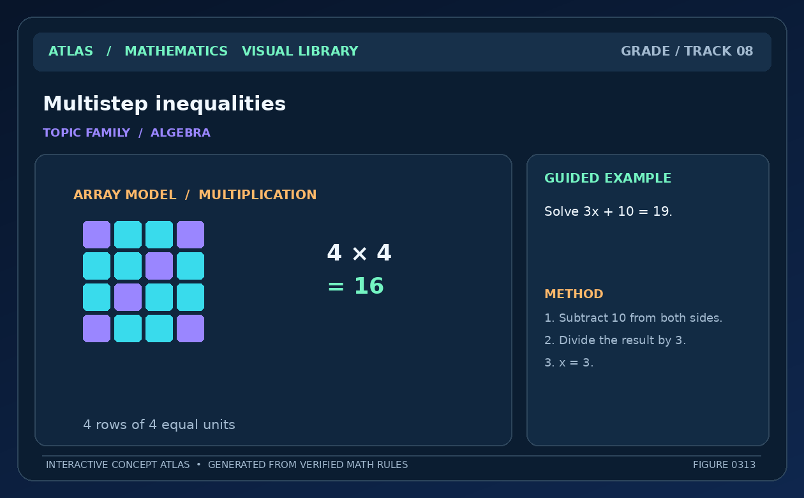
Solve 3x + 10 = 19.
- Subtract 10 from both sides.
- Divide the result by 3.
- x = 3.
Solve 10x + 3 = 53. Enter x.
Hint: Undo addition and then multiplication.
Show answer and verify
5
Check the units, inputs and intermediate steps. Different solution methods may be valid.
Variable isolation
Variable isolation: Undo operations in reverse order and perform the same operation on both sides. An equation represents equality, so balanced transformations preserve its solution.
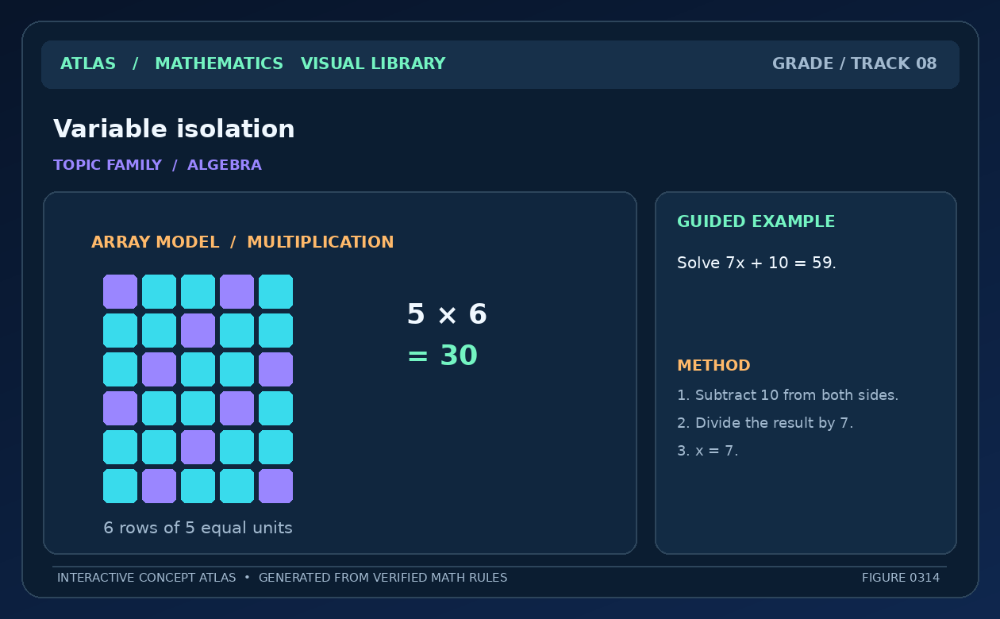
Solve 7x + 10 = 59.
- Subtract 10 from both sides.
- Divide the result by 7.
- x = 7.
Solve 10x + 7 = 97. Enter x.
Hint: Undo addition and then multiplication.
Show answer and verify
9
Check the units, inputs and intermediate steps. Different solution methods may be valid.
Proportional equations
Proportional equations: Undo operations in reverse order and perform the same operation on both sides. An equation represents equality, so balanced transformations preserve its solution.
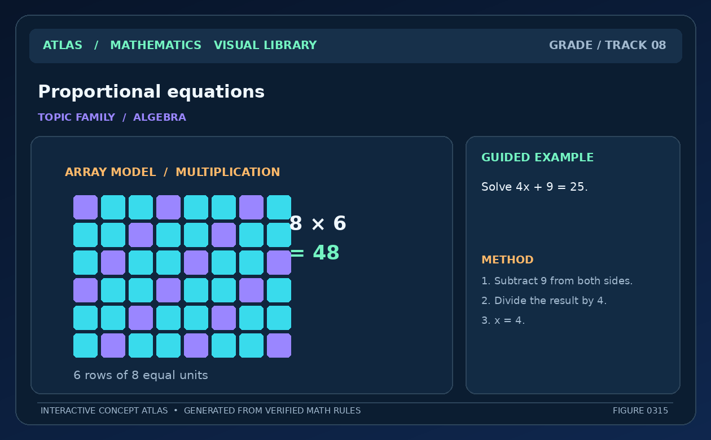
Solve 4x + 9 = 25.
- Subtract 9 from both sides.
- Divide the result by 4.
- x = 4.
Solve 9x + 4 = 58. Enter x.
Hint: Undo addition and then multiplication.
Show answer and verify
6
Check the units, inputs and intermediate steps. Different solution methods may be valid.
Scientific notation arithmetic
Scientific notation arithmetic: Undo operations in reverse order and perform the same operation on both sides. An equation represents equality, so balanced transformations preserve its solution.
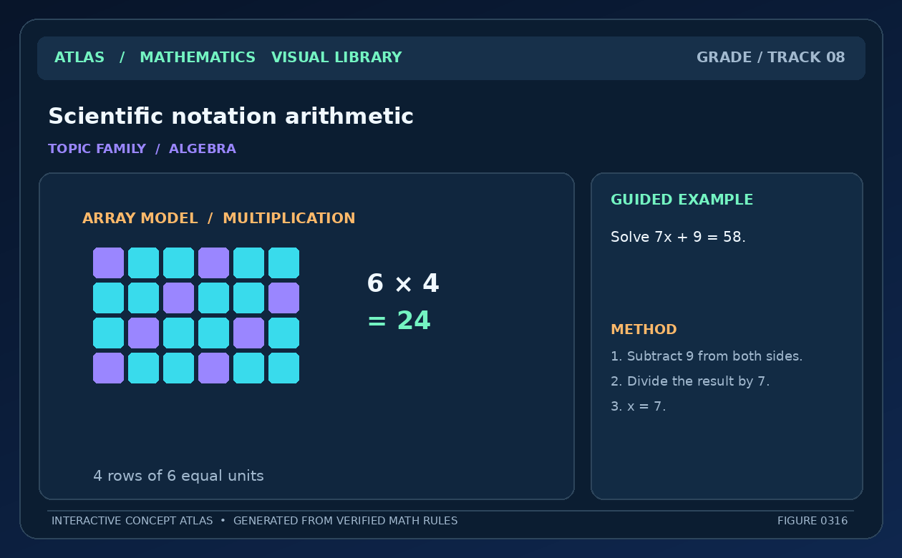
Solve 7x + 9 = 58.
- Subtract 9 from both sides.
- Divide the result by 7.
- x = 7.
Solve 9x + 7 = 88. Enter x.
Hint: Undo addition and then multiplication.
Show answer and verify
9
Check the units, inputs and intermediate steps. Different solution methods may be valid.
Integer exponents
Integer exponents: Exponents count repeated multiplication; use exponent laws only for compatible bases. For nonzero a, a^m × a^n = a^(m+n).
Evaluate 7².
- Multiply 7 by itself.
- 7² = 49.
Calculate 10³.
Hint: Cube means multiply the base three times.
Show answer and verify
1000
Check the units, inputs and intermediate steps. Different solution methods may be valid.
Negative exponents
Negative exponents: Exponents count repeated multiplication; use exponent laws only for compatible bases. For nonzero a, a^m × a^n = a^(m+n).
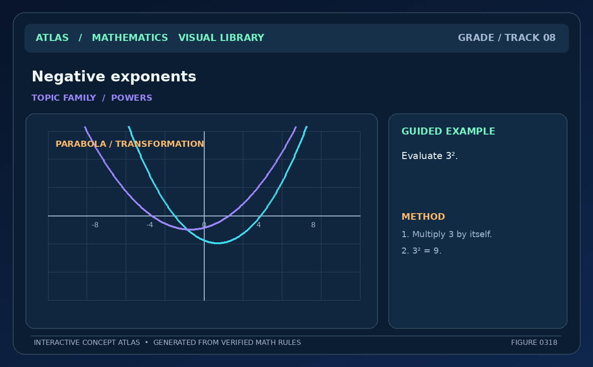
Evaluate 3².
- Multiply 3 by itself.
- 3² = 9.
Calculate 7³.
Hint: Cube means multiply the base three times.
Show answer and verify
343
Check the units, inputs and intermediate steps. Different solution methods may be valid.
Zero-exponent rule
Zero-exponent rule: Exponents count repeated multiplication; use exponent laws only for compatible bases. For nonzero a, a^m × a^n = a^(m+n).
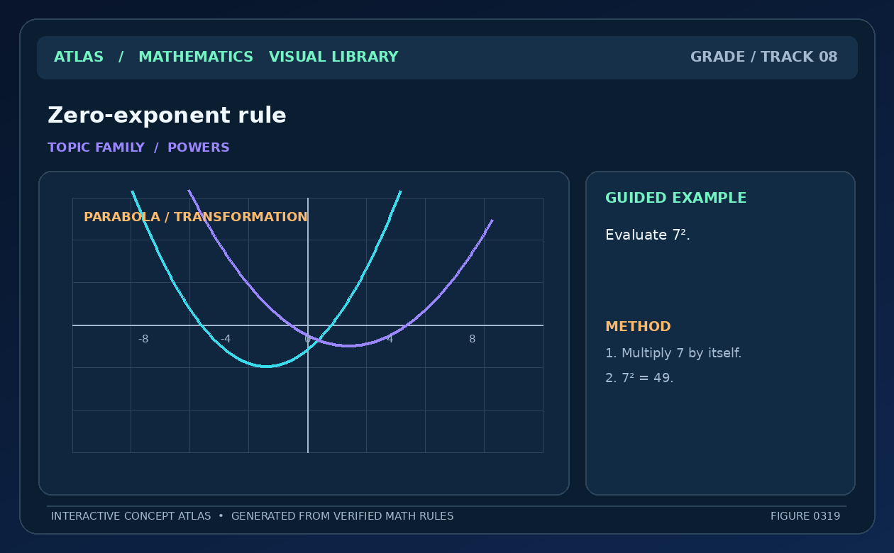
Evaluate 7².
- Multiply 7 by itself.
- 7² = 49.
Calculate 4³.
Hint: Cube means multiply the base three times.
Show answer and verify
64
Check the units, inputs and intermediate steps. Different solution methods may be valid.
Exponent laws
Exponent laws: Exponents count repeated multiplication; use exponent laws only for compatible bases. For nonzero a, a^m × a^n = a^(m+n).
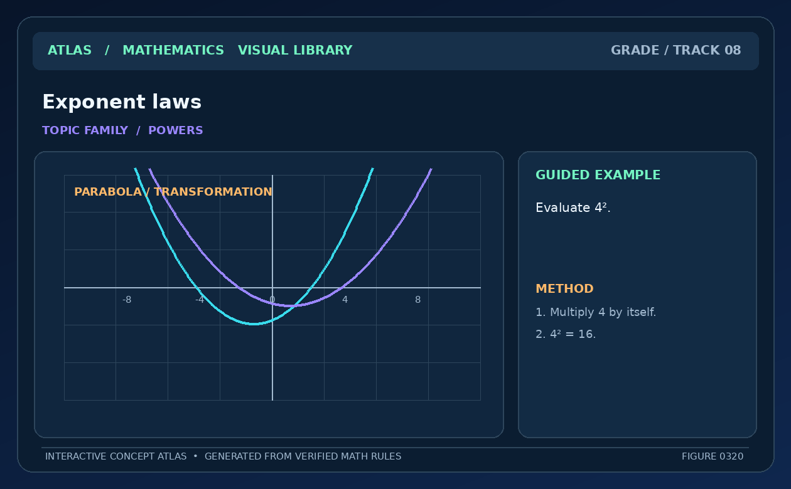
Evaluate 4².
- Multiply 4 by itself.
- 4² = 16.
Calculate 5³.
Hint: Cube means multiply the base three times.
Show answer and verify
125
Check the units, inputs and intermediate steps. Different solution methods may be valid.
Standard and scientific notation
Standard and scientific notation: Exponents count repeated multiplication; use exponent laws only for compatible bases. For nonzero a, a^m × a^n = a^(m+n).
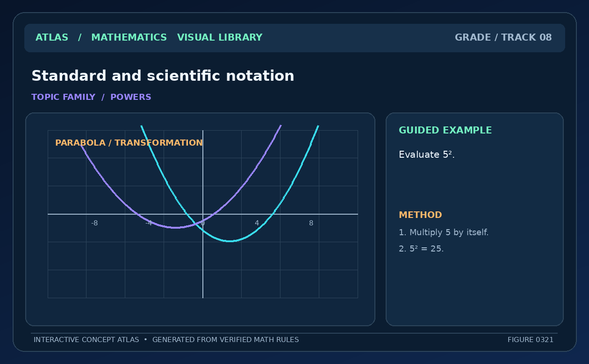
Evaluate 5².
- Multiply 5 by itself.
- 5² = 25.
Calculate 2³.
Hint: Cube means multiply the base three times.
Show answer and verify
8
Check the units, inputs and intermediate steps. Different solution methods may be valid.
Square roots
Square roots: The principal square root is the nonnegative number whose square is the radicand. Check the result by squaring it; extraneous roots can appear in equations.
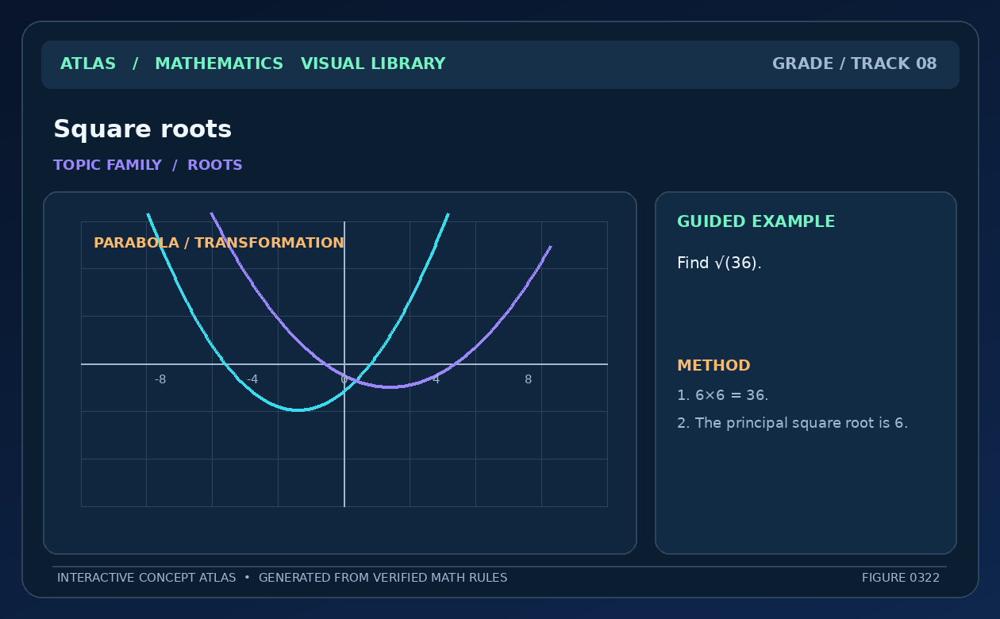
Find √(36).
- 6×6 = 36.
- The principal square root is 6.
Find √(25).
Hint: The principal square root is nonnegative.
Show answer and verify
5
Check the units, inputs and intermediate steps. Different solution methods may be valid.
Cube roots
Cube roots: The principal square root is the nonnegative number whose square is the radicand. Check the result by squaring it; extraneous roots can appear in equations.
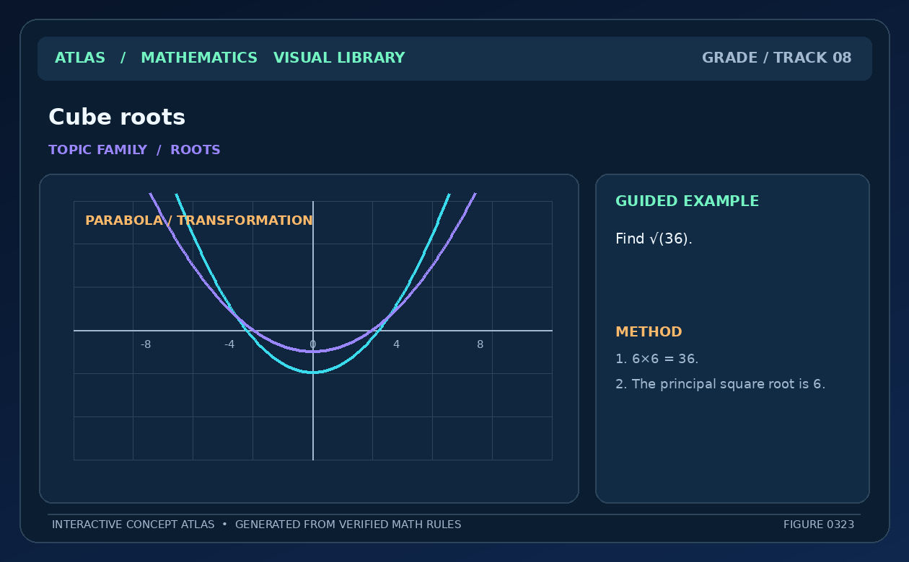
Find √(36).
- 6×6 = 36.
- The principal square root is 6.
Find √(49).
Hint: The principal square root is nonnegative.
Show answer and verify
7
Check the units, inputs and intermediate steps. Different solution methods may be valid.
Square root equations
Square root equations: The principal square root is the nonnegative number whose square is the radicand. Check the result by squaring it; extraneous roots can appear in equations.
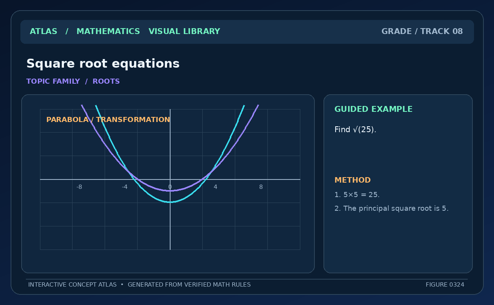
Find √(25).
- 5×5 = 25.
- The principal square root is 5.
Find √(36).
Hint: The principal square root is nonnegative.
Show answer and verify
6
Check the units, inputs and intermediate steps. Different solution methods may be valid.
Perfect squares and cubes
Perfect squares and cubes: The principal square root is the nonnegative number whose square is the radicand. Check the result by squaring it; extraneous roots can appear in equations.
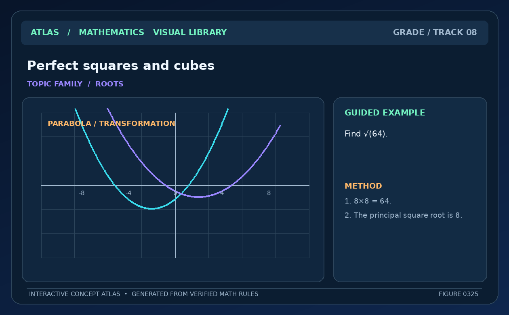
Find √(64).
- 8×8 = 64.
- The principal square root is 8.
Find √(121).
Hint: The principal square root is nonnegative.
Show answer and verify
11
Check the units, inputs and intermediate steps. Different solution methods may be valid.
Irrational number estimates
Irrational number estimates: The principal square root is the nonnegative number whose square is the radicand. Check the result by squaring it; extraneous roots can appear in equations.
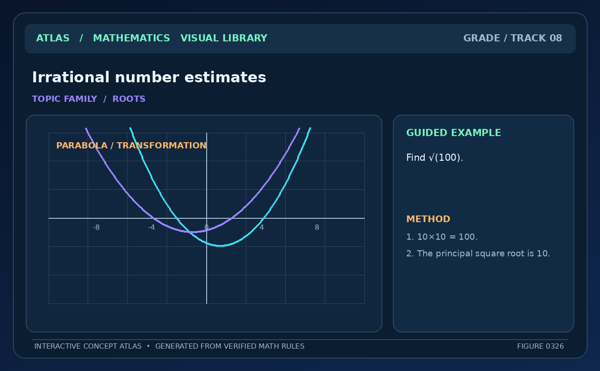
Find √(100).
- 10×10 = 100.
- The principal square root is 10.
Find √(25).
Hint: The principal square root is nonnegative.
Show answer and verify
5
Check the units, inputs and intermediate steps. Different solution methods may be valid.
Pythagorean theorem problems
Pythagorean theorem problems: For a right triangle, the squares of the legs add to the hypotenuse square. The Pythagorean theorem applies only to right triangles.
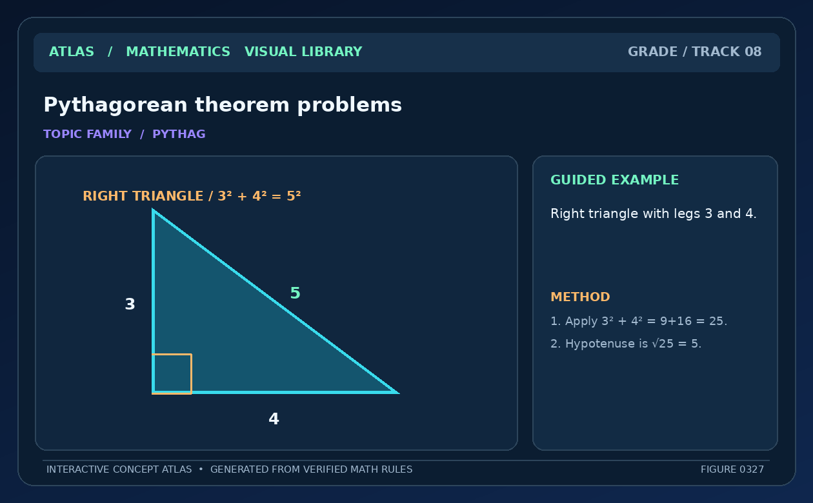
Right triangle with legs 3 and 4.
- Apply 3² + 4² = 9+16 = 25.
- Hypotenuse is √25 = 5.
Right triangle legs 15 and 20. Hypotenuse?
Hint: Scale the 3–4–5 right triangle.
Show answer and verify
25
Check the units, inputs and intermediate steps. Different solution methods may be valid.
Distance on the coordinate plane
Distance on the coordinate plane: For a right triangle, the squares of the legs add to the hypotenuse square. The Pythagorean theorem applies only to right triangles.
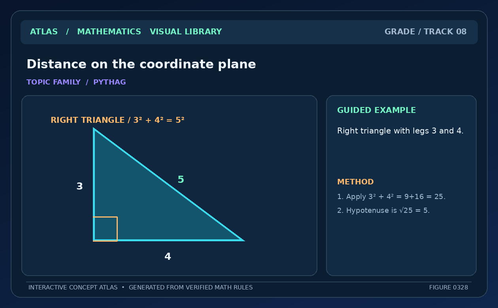
Right triangle with legs 3 and 4.
- Apply 3² + 4² = 9+16 = 25.
- Hypotenuse is √25 = 5.
Right triangle legs 21 and 28. Hypotenuse?
Hint: Scale the 3–4–5 right triangle.
Show answer and verify
35
Check the units, inputs and intermediate steps. Different solution methods may be valid.
Pythagorean triples
Pythagorean triples: For a right triangle, the squares of the legs add to the hypotenuse square. The Pythagorean theorem applies only to right triangles.
Right triangle with legs 3 and 4.
- Apply 3² + 4² = 9+16 = 25.
- Hypotenuse is √25 = 5.
Right triangle legs 12 and 16. Hypotenuse?
Hint: Scale the 3–4–5 right triangle.
Show answer and verify
20
Check the units, inputs and intermediate steps. Different solution methods may be valid.
Converse of the theorem
Converse of the theorem: For a right triangle, the squares of the legs add to the hypotenuse square. The Pythagorean theorem applies only to right triangles.
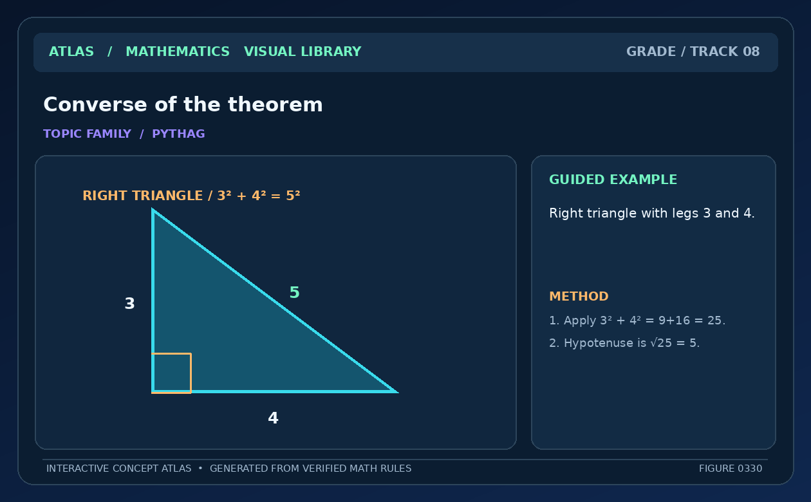
Right triangle with legs 3 and 4.
- Apply 3² + 4² = 9+16 = 25.
- Hypotenuse is √25 = 5.
Right triangle legs 3 and 4. Hypotenuse?
Hint: Scale the 3–4–5 right triangle.
Show answer and verify
5
Check the units, inputs and intermediate steps. Different solution methods may be valid.
Congruent transformations
Congruent transformations: Sketch and label known lengths, angles and shape properties before calculating. A valid geometric argument uses definitions and established properties.
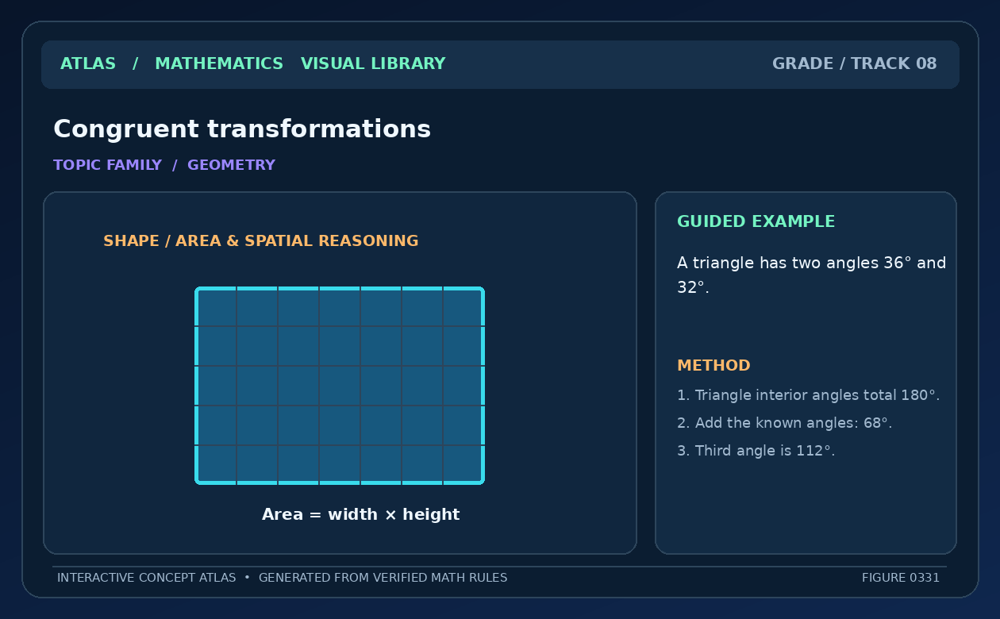
A triangle has two angles 36° and 32°.
- Triangle interior angles total 180°.
- Add the known angles: 68°.
- Third angle is 112°.
A triangle has angles 24° and 24°. Find the third.
Hint: Interior triangle angles sum to 180 degrees.
Show answer and verify
132
Check the units, inputs and intermediate steps. Different solution methods may be valid.
Translations in the plane
Translations in the plane: Sketch and label known lengths, angles and shape properties before calculating. A valid geometric argument uses definitions and established properties.
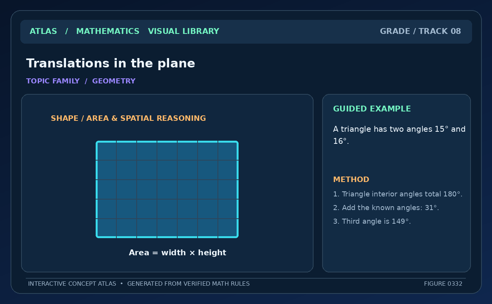
A triangle has two angles 15° and 16°.
- Triangle interior angles total 180°.
- Add the known angles: 31°.
- Third angle is 149°.
A triangle has angles 10° and 12°. Find the third.
Hint: Interior triangle angles sum to 180 degrees.
Show answer and verify
158
Check the units, inputs and intermediate steps. Different solution methods may be valid.
Rotations about a point
Rotations about a point: Sketch and label known lengths, angles and shape properties before calculating. A valid geometric argument uses definitions and established properties.
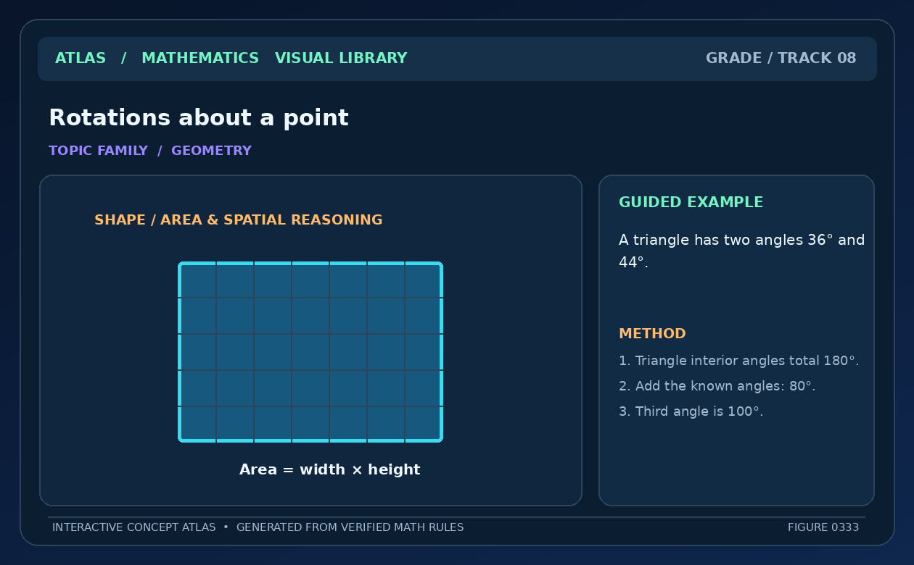
A triangle has two angles 36° and 44°.
- Triangle interior angles total 180°.
- Add the known angles: 80°.
- Third angle is 100°.
A triangle has angles 24° and 33°. Find the third.
Hint: Interior triangle angles sum to 180 degrees.
Show answer and verify
123
Check the units, inputs and intermediate steps. Different solution methods may be valid.
Reflections across an axis
Reflections across an axis: Sketch and label known lengths, angles and shape properties before calculating. A valid geometric argument uses definitions and established properties.
A triangle has two angles 30° and 44°.
- Triangle interior angles total 180°.
- Add the known angles: 74°.
- Third angle is 106°.
A triangle has angles 20° and 33°. Find the third.
Hint: Interior triangle angles sum to 180 degrees.
Show answer and verify
127
Check the units, inputs and intermediate steps. Different solution methods may be valid.
Dilations and similar shapes
Dilations and similar shapes: Sketch and label known lengths, angles and shape properties before calculating. A valid geometric argument uses definitions and established properties.
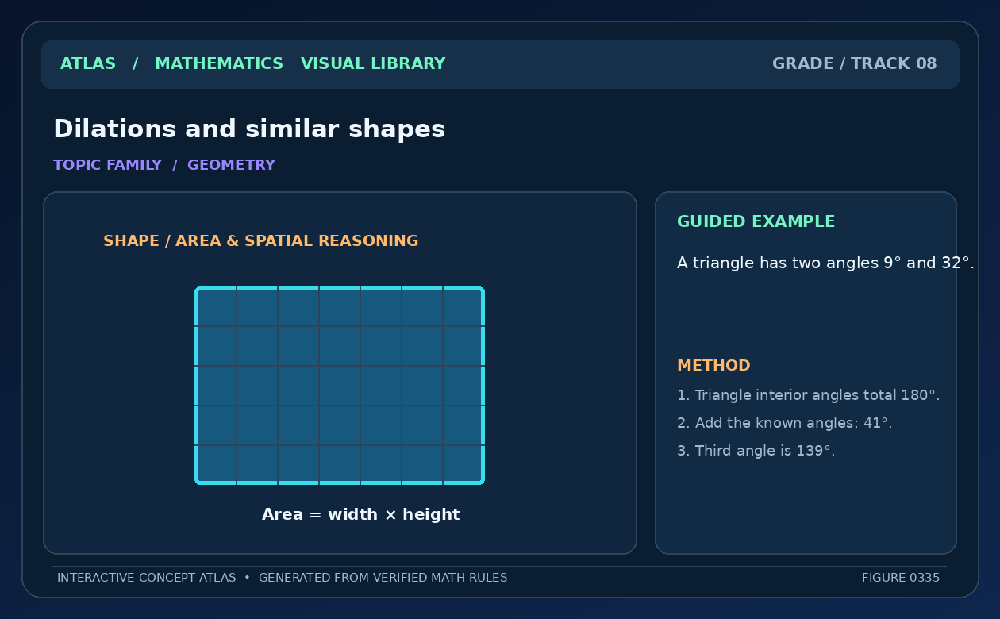
A triangle has two angles 9° and 32°.
- Triangle interior angles total 180°.
- Add the known angles: 41°.
- Third angle is 139°.
A triangle has angles 6° and 24°. Find the third.
Hint: Interior triangle angles sum to 180 degrees.
Show answer and verify
150
Check the units, inputs and intermediate steps. Different solution methods may be valid.
Volume of spheres
Volume of spheres: Sketch and label known lengths, angles and shape properties before calculating. A valid geometric argument uses definitions and established properties.
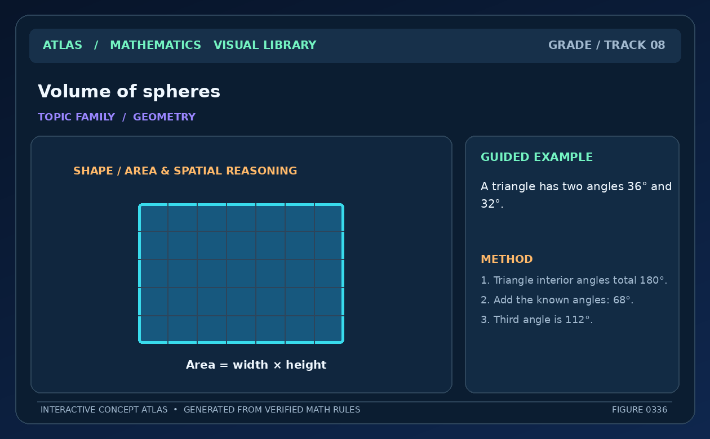
A triangle has two angles 36° and 32°.
- Triangle interior angles total 180°.
- Add the known angles: 68°.
- Third angle is 112°.
A triangle has angles 24° and 24°. Find the third.
Hint: Interior triangle angles sum to 180 degrees.
Show answer and verify
132
Check the units, inputs and intermediate steps. Different solution methods may be valid.
Volume of cylinders
Volume of cylinders: Sketch and label known lengths, angles and shape properties before calculating. A valid geometric argument uses definitions and established properties.
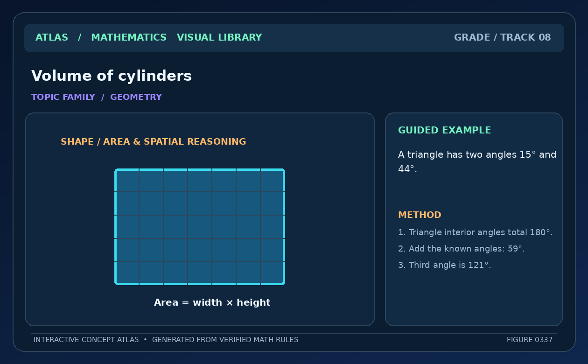
A triangle has two angles 15° and 44°.
- Triangle interior angles total 180°.
- Add the known angles: 59°.
- Third angle is 121°.
A triangle has angles 10° and 33°. Find the third.
Hint: Interior triangle angles sum to 180 degrees.
Show answer and verify
137
Check the units, inputs and intermediate steps. Different solution methods may be valid.
Volume of cones
Volume of cones: Sketch and label known lengths, angles and shape properties before calculating. A valid geometric argument uses definitions and established properties.
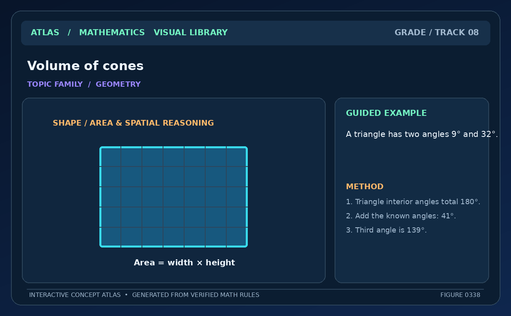
A triangle has two angles 9° and 32°.
- Triangle interior angles total 180°.
- Add the known angles: 41°.
- Third angle is 139°.
A triangle has angles 6° and 24°. Find the third.
Hint: Interior triangle angles sum to 180 degrees.
Show answer and verify
150
Check the units, inputs and intermediate steps. Different solution methods may be valid.
Scatter plots
Scatter plots: Organize observations and distinguish measures of center from measures of spread. The mean is the total divided by the number of observations.
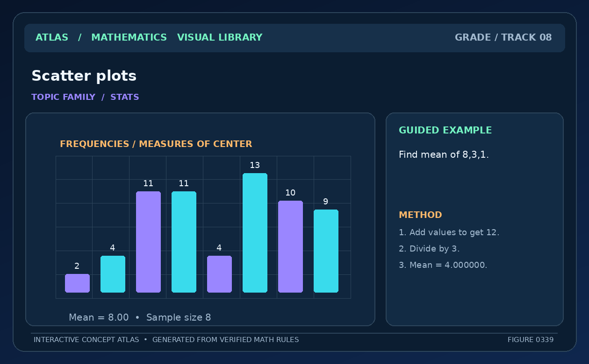
Find mean of 8,3,1.
- Add values to get 12.
- Divide by 3.
- Mean = 4.000000.
Mean of 8,10,12?
Hint: Sum observations and divide by count.
Show answer and verify
10
Check the units, inputs and intermediate steps. Different solution methods may be valid.
Trend lines
Trend lines: Organize observations and distinguish measures of center from measures of spread. The mean is the total divided by the number of observations.
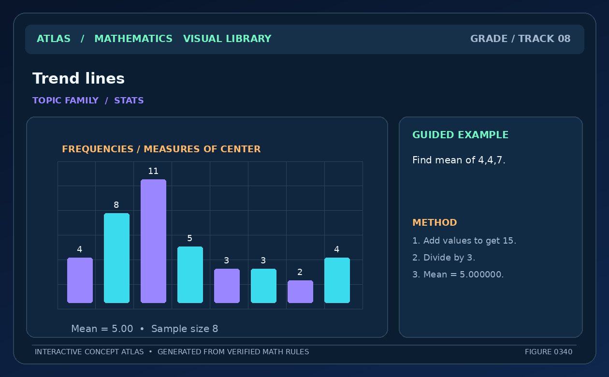
Find mean of 4,4,7.
- Add values to get 15.
- Divide by 3.
- Mean = 5.000000.
Mean of 4,6,8?
Hint: Sum observations and divide by count.
Show answer and verify
6
Check the units, inputs and intermediate steps. Different solution methods may be valid.
Correlation versus causation
Correlation versus causation: Organize observations and distinguish measures of center from measures of spread. The mean is the total divided by the number of observations.
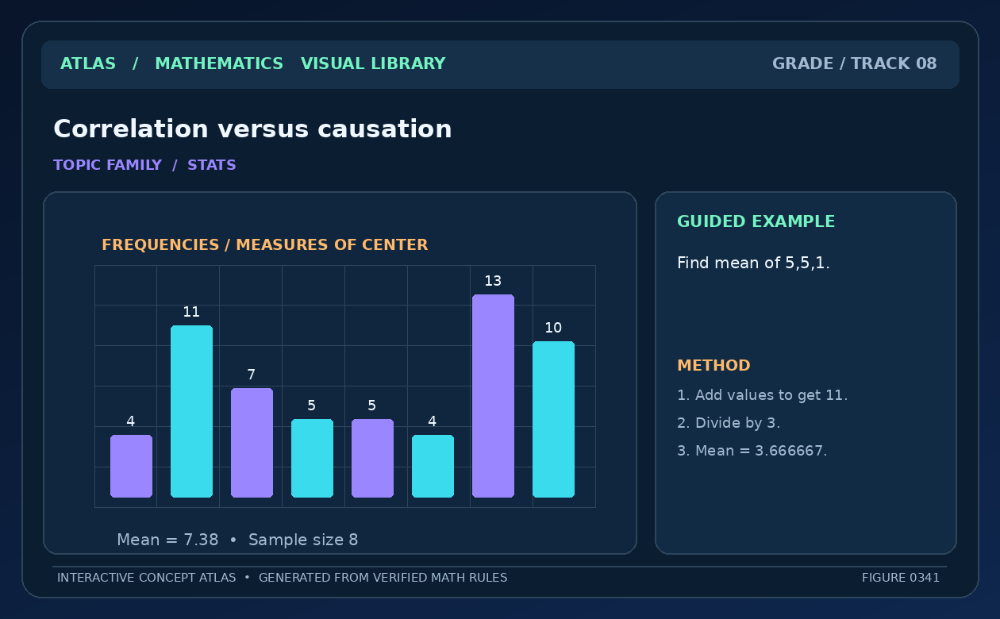
Find mean of 5,5,1.
- Add values to get 11.
- Divide by 3.
- Mean = 3.666667.
Mean of 5,7,9?
Hint: Sum observations and divide by count.
Show answer and verify
7
Check the units, inputs and intermediate steps. Different solution methods may be valid.
Two-way frequency tables
Two-way frequency tables: Organize observations and distinguish measures of center from measures of spread. The mean is the total divided by the number of observations.
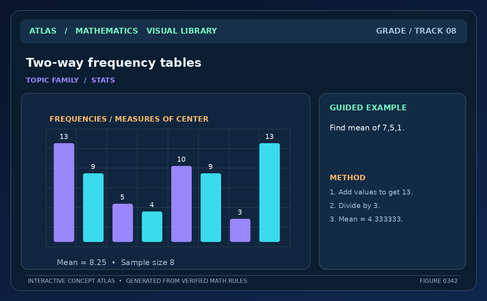
Find mean of 7,5,1.
- Add values to get 13.
- Divide by 3.
- Mean = 4.333333.
Mean of 7,9,11?
Hint: Sum observations and divide by count.
Show answer and verify
9
Check the units, inputs and intermediate steps. Different solution methods may be valid.
Relative frequency
Relative frequency: Organize observations and distinguish measures of center from measures of spread. The mean is the total divided by the number of observations.
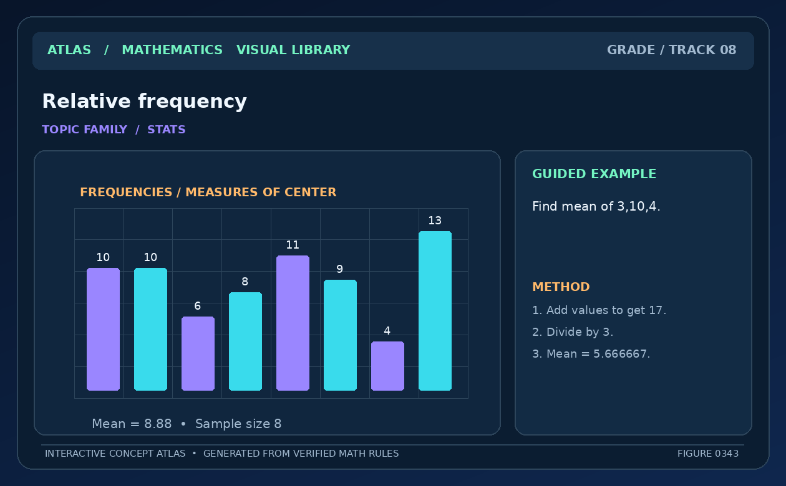
Find mean of 3,10,4.
- Add values to get 17.
- Divide by 3.
- Mean = 5.666667.
Mean of 3,5,7?
Hint: Sum observations and divide by count.
Show answer and verify
5
Check the units, inputs and intermediate steps. Different solution methods may be valid.
Counting principle
Counting principle: Write favorable outcomes over the total equally likely outcomes. A probability lies between zero and one, inclusive.
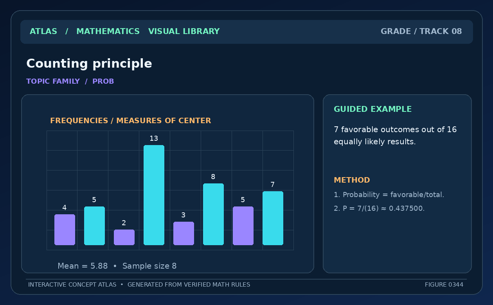
7 favorable outcomes out of 16 equally likely results.
- Probability = favorable/total.
- P = 7/(16) ≈ 0.437500.
9 favorable outcomes out of 16. Give a decimal.
Hint: Favorable divided by total outcomes.
Show answer and verify
0.5625
Check the units, inputs and intermediate steps. Different solution methods may be valid.
Basic permutations
Basic permutations: Write favorable outcomes over the total equally likely outcomes. A probability lies between zero and one, inclusive.
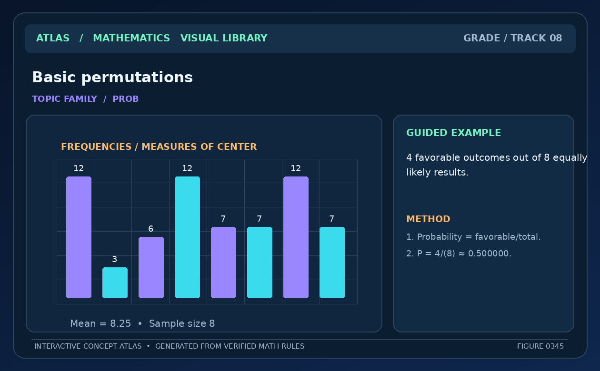
4 favorable outcomes out of 8 equally likely results.
- Probability = favorable/total.
- P = 4/(8) ≈ 0.500000.
4 favorable outcomes out of 8. Give a decimal.
Hint: Favorable divided by total outcomes.
Show answer and verify
0.5
Check the units, inputs and intermediate steps. Different solution methods may be valid.
Linear earning models
Linear earning models: Convert a percentage to a decimal and write down the compounding period before computing. A loan APR and an investment APY are not automatically interchangeable.
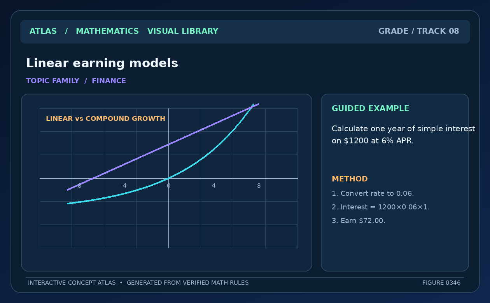
Calculate one year of simple interest on $1200 at 6% APR.
- Convert rate to 0.06.
- Interest = 1200×0.06×1.
- Earn $72.00.
Interest on $1000 at 6% for one year?
Hint: Simple interest is principal × annual rate × time.
Show answer and verify
60
Check the units, inputs and intermediate steps. Different solution methods may be valid.
Comparing loan offers with simple interest
Comparing loan offers with simple interest: Convert a percentage to a decimal and write down the compounding period before computing. A loan APR and an investment APY are not automatically interchangeable.
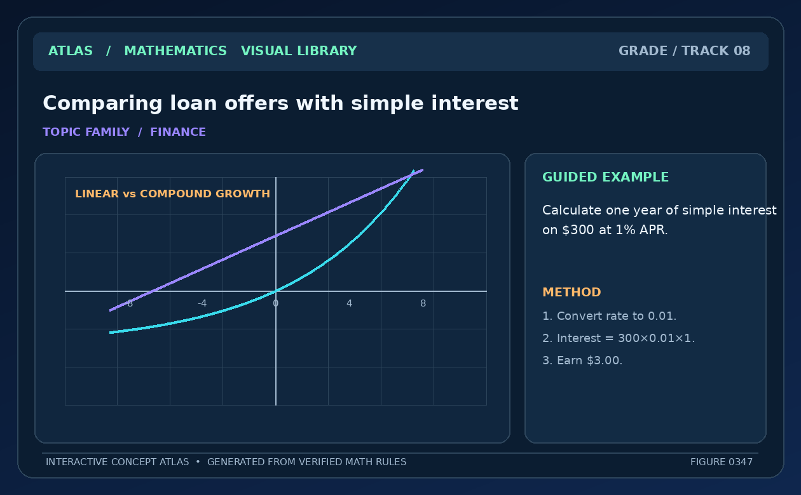
Calculate one year of simple interest on $300 at 1% APR.
- Convert rate to 0.01.
- Interest = 300×0.01×1.
- Earn $3.00.
Interest on $400 at 1% for one year?
Hint: Simple interest is principal × annual rate × time.
Show answer and verify
4
Check the units, inputs and intermediate steps. Different solution methods may be valid.